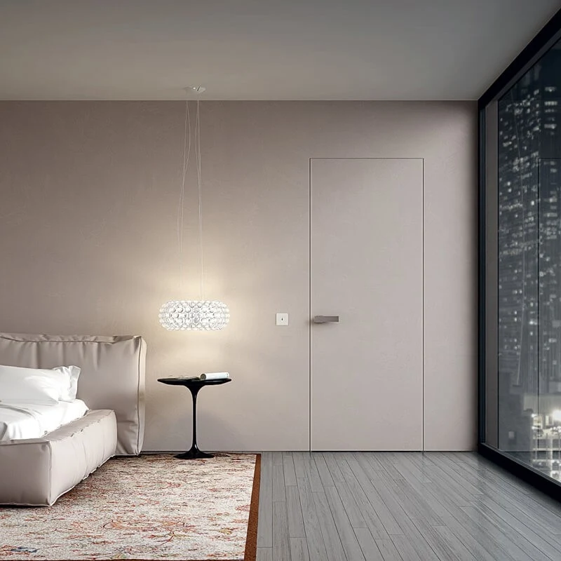

42 / ФАНЕРА
До 2200 мм
Каркас из берёзовой фанеры для системы 42 мм.
- Скрытый монтаж
- Грунт под покраску
Полотно в грунте под последующую окраску помогает визуально объединить дверь и стену. Подберите систему 42 или 59 мм, высоту и открывание ещё до чистовой отделки.

Скрытый короб убирает привычные наличники, а полотно в грунте оставляет возможность подобрать финишный цвет уже под интерьер.
| Система | 42 или 59 мм |
|---|---|
| Размер полотна | В пределах возможностей выбранной конструкции |
| Открывание | Левое / правое, Classic / Reverse |
| Подготовка полотна | Грунт под последующую окраску |
| Торец и короб | Подбираются вместе с системой и спецификацией |
| Финишный цвет | Определяется в рамках отделочного решения проекта |
Обе системы могут использоваться с грунтом под покраску, но отличаются каркасом и допустимой высотой полотна.
Каркас из берёзовой фанеры для системы 42 мм.
Алюминиевый каркас расширяет диапазон высоты в системе 42 мм.
Система 59 мм для самых высоких полотен в текущей линейке Hidden Doors.
Скрытая дверь влияет на подготовку проёма, короб, направление открывания и примыкания. Поэтому конструкцию лучше выбрать раньше, чем начнутся финальные отделочные работы.
До заказа фиксируем систему, размеры и открывание. После установки и подготовки поверхности финишное окрашивание выполняется в рамках выбранного интерьерного решения.
Совместимость конкретных материалов и порядок отделочных работ нужно согласовывать с исполнителями проекта.Когда устанавливать скрытые двери ↗Гид: покраска, обои и штукатурка вокруг двери ↗Гид: все варианты отделки полотна ↗Открывание выбирается до подготовки проёма: оно влияет на короб и то, как дверь работает относительно стены и мебели.
Выбираем левое или правое исполнение под планировку помещения.
Реверсивное исполнение помогает организовать открывание «от себя», сохраняя скрытую геометрию проёма.
До заказа сверяем направление двери с мебелью, выключателями и маршрутом движения по помещению.
Главный визуальный эффект — не в самом грунте, а в возможности связать полотно с общей отделочной концепцией помещения.
В текущей линейке грунт под последующую окраску предусмотрен для скрытых систем 42 и 59 мм.
Да. Полотно в грунте предназначено для последующей отделки, поэтому финишный цвет можно увязать с цветом стены в рамках интерьерного проекта.
Выбор зависит в первую очередь от требуемой высоты, конструкции и отделки. 42 мм доступна на фанерном и алюминиевом каркасе, 59 мм — на алюминиевом и позволяет делать полотна до 2950 мм.
Конструкцию и открывание лучше определить до чистовой отделки и окончательной подготовки проёма.
Да, для скрытых систем предусмотрены варианты Classic и Reverse. Сторону и тип открывания согласуем до заказа.
Уточним высоту, конструкцию, открывание и комплектацию,
а затем определим подходящую систему 42 или 59 мм.